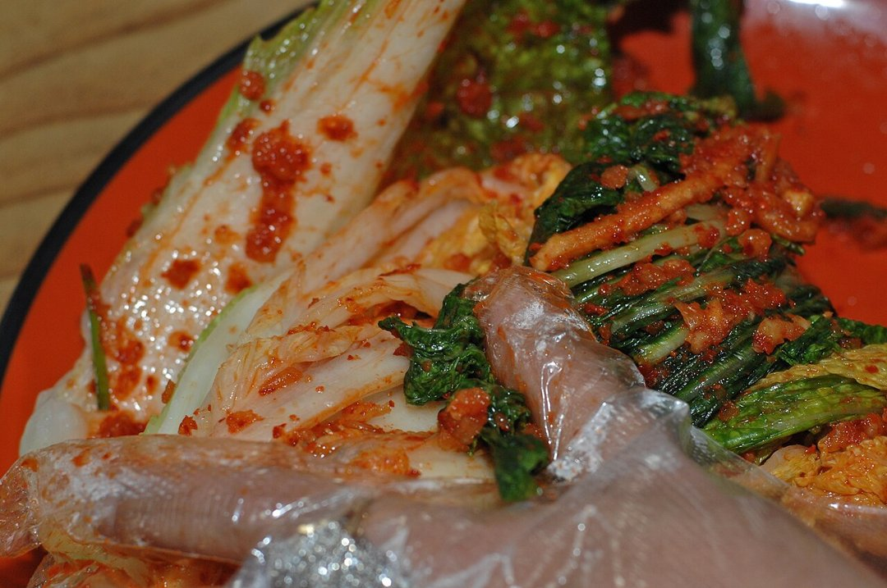

📷 사진 1 자리

▲ 배추를 절여 김치를 담그는 모습 · 사진: USAG- Humphreys / CC BY 2.0 / 위키미디어 공용
올해 4인 가족이 전통시장에서 재료를 사 김장을 하면 약 34만 원이 든다는 조사가 나왔어요. 같은 양을 완제품 김치로 사면 77만 원이 넘어요. 다만 기관마다 조사 품목과 할인 반영 여부가 달라서 19만 원대부터 36만 원대까지 숫자가 갈려요.
올해 김장 비용 얼마
한국물가협회가 11월 10일부터 12일까지 전국 6대 도시에서 김장 재료 15가지 값을 조사했어요. 포기김치 58kg에 깍두기·총각김치까지 4인 가족 몫이 기준이에요.
전통시장에서 다 사서 담그면 33만 9,670원이에요. 지난해보다 7.6% 내려 2년 연속 줄었어요. 가을배추 작황이 좋아 배추와 쪽파가 크게 내렸고, 새우젓은 30% 넘게 올랐어요.
방법별 비용 비교
| 방법 | 4인 가족 | 배추 1포기당 |
|---|---|---|
| 직접 담그기 | 33만 9,670원 | 2만 1,230원 |
| 절임배추 이용 | 38만 4,730원 | 2만 4,050원 |
| 완제품 구매 | 77만 2,620원 | 4만 8,290원 |
완제품은 대형마트와 온라인몰 여러 브랜드 값을 평균 낸 금액이에요. 직접 담그는 쪽은 재료값만 따졌고 품값은 들어가지 않았어요. 그래서 실제 차이는 표보다 작게 느껴질 수 있어요.
기관마다 숫자가 다른 이유
| 조사 기관 | 4인 가족 비용 | 기준 |
|---|---|---|
| aT | 19만 9,456원 | 13개 품목, 할인 반영 |
| 한국물가정보 | 28만 8,500원 | 11개 품목, 전통시장 |
| 한국물가협회 | 33만 9,670원 | 15개 품목, 전통시장 |
aT는 정부와 유통업체 할인을 적용한 값이고 한국물가정보는 할인을 빼고 계산했어요. 한국물가정보 조사에서 같은 재료를 대형마트에서 사면 36만 340원이었어요.
내 장바구니와 가까운 숫자를 고르려면 사는 곳과 할인 행사 참여 여부를 먼저 보세요. 정부·유통업체 할인 행사 매장에서 산다면 aT 쪽에 가깝고, 할인 없이 시장에서 산다면 물가협회 값이 가까워요.
포기당 차이를 보면 절임배추를 쓸 때 직접 담그기보다 2,820원 더 들고 완제품보다는 2만 4천 원 넘게 아껴요. 배추를 절이고 씻는 일이 김장에서 가장 손이 많이 가는 단계라 일손이 적은 집이라면 절임배추가 비용과 시간을 같이 따졌을 때 무리 없는 선택이에요.
물가협회는 김장을 늦춘다고 재료비가 줄지는 않는다고 봤어요. 조사 시점 배추 도매가가 11월 초보다 올랐다는 점도 함께 참고하세요.
함께 보면 좋은 이슈